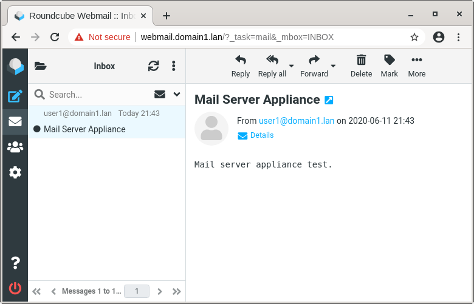

Information Technology Products
Linux software appliances, free open source products.
Linux Software Appliances
Linux software appliance is minimal Linux operating system with pre-installed ready to use
software applications.
This software appliances are used with systemd-nspawn technology that create light-weight container and
virtualize file system and processes.
Features:
- Ready to use copy paste software applications
- Folder container with operating system and applications
- Can be used anywhere Linux is installed, in cloud, in virtual machine
- Use full performance of the host, CPU, memory, disk
- https://en.wikipedia.org/wiki/Software_appliance
- https://freedesktop.org/software/systemd/man/systemd-nspawn.html
Base Appliance
The base appliance contain minimal Linux operating system, other software applications are installed on top of this appliance.

This image show the appliance operating system and used kernel of the host system.
PageBase Appliance
Download
https://github.com/ivoprogram/linuxapp
centos7.base-2020-06-10.tar.gz
DNS Server Appliance
This appliance is ready to use pre-installed DNS Server.
There are many scenarios when DNS server is required, for example for most of the organizations local
DNS server will be very useful.
Local DNS server can be used to give names to local servers, and to be used as a caching DNS server for the
Local Area Network, this will be also useful for performance and privacy.
This appliance is configured as local Caching DNS Server, and can be configured for all other scenarios as
required.
/etc/named.conf
/var/named/domain1.lan.zone
/var/named/8.168.192.in-addr.arpa
Download
https://github.com/ivoprogram/linuxapp
centos7.dns-2020-06-10.tar.gz
Mail Server Appliance
This appliance is ready to use pre-installed Mail Server.

This appliance is complete Mail Server,
has Webmail interface and can be used also with other email clients.
For many organizations it is requirement to have their own Mail Server,
for privacy and security and other reasons.
- Webmail interface
- POP3, IMAP, SMTP protocols
- SSL Certificate for secure communications
- Multiple domains and IP addresses (optional)
CentOS 7, Postfix, Dovecot, Roundcube Webmail
The service include installation and configuration, appliance, domains, ip addresses, certificate, security.
Price: 50 EuroMarketing Server Appliance
This appliance is ready to use pre-installed Mail Marketing Server.
This appliance is complete Email Marketing solution, has phpList and mail server.
Allow to manage subscribers lists and statistics, send news letters advertising and more.
Email marketing is one of the most effective marketing solutions.
There are public email marketing solutions but they have many
restrictions limitations and are expensive, having own marketing solution has many benefits.
- Subscribers, Newsletters, Campaigns, Statistics
- Webmail interface
- POP3, IMAP, SMTP protocols
- SSL Certificate for secure communications
- Multiple domains and IP addresses (optional)
CentOS 7, PhpList, Postfix, Dovecot, Roundcube Webmail
The service include installation and configuration, appliance, domains, ip addresses, certificate, security.
Price: 50 EuroCloud Software Appliance
ownCloud is a file hosting and sharing software application, allow to share on line files, documents, photos and more.
ownCloud supports extensions that allow online document editing, calendar and contact synchronization, and more.
ReferencesTechnologies
CentOS 7, ownCloud, Apache, MariaDb
The service include installation and configuration, appliance, domain, ip address, certificate, security.
Price: 50 EuroHelp Desk Software Appliance
OTRS is a Ticket Request System, a service management software to support customers requests.
It is used by IT service management, customer service and help desk to organize their communication and tasks.
ReferencesTechnologies
CentOS 7, OTRS, Apache, MariaDb
The service include installation and configuration, appliance, domain, ip address, certificate, security.
Price: 50 EuroE-Commerce Software Appliance
Magento is a open source E-Commerce platform for online business.
Magento has many features as products, orders, shipping, payments, customers and more.
ReferencesTechnologies
CentOS 7, Magento, Apache, MariaDb
The service include installation and configuration, appliance, domain, ip address, certificate, security.
Price: 50 EuroEducation Software Appliance
Moodle is a open source E-Learning software application.
Moodle is used for distance education and other E-Learning projects in schools, universities, workplaces. It is a learning platform used to create online courses for educators and trainers.
ReferencesTechnologies
CentOS 7, Moodle, Apache, MariaDb
The service include installation and configuration, appliance, domain, ip address, certificate, security.
Price: 50 EuroOverwrite Program
Overwrite is a free open source program that overwrites free space on disk for privacy and security.
- Page: Overwrite
- Source code: https://github.com/ivoprogram/overwrite

WebJS Project
WebJS is a free open source web framework for client side web development.
- Page: WebJS
- Source code: https://github.com/ivoprogram/webjs

WebutilsJS Project
WebutilsJS is a free open source web framework for web user interface utilities.
- Page: WebutilsJS
- Source code: https://github.com/ivoprogram/webutilsjs